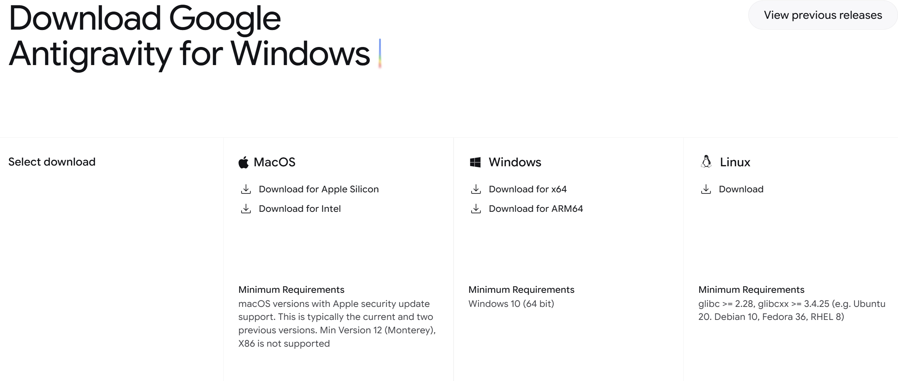

AI Farm Build Log #2 (v5.0 Inline)
"쉬운 것부터 차근차근!"
Antigravity 설치로 첫 삽 뜨기 🛠️
"Vibe Coding, 즉 Agentic Programming은 거창한 것이 아닙니다."
20년 차 개발자로서 제가 내린 결론은 **'기본기'**입니다. 오늘은 우리 아이와 함께할 자동화 팜 그 첫 번째 시간으로, 가장 핫한 도구인 Antigravity를 설치하는 방법부터 차근차근 공유해 드립니다.
🚀 01. 공식 사이트 접속하기
먼저 프로젝트의 핵심 엔진을 받기 위해 공식 사이트로 접속해야 합니다. 주소는 아주 심플합니다: https://antigravity.google/
📸 네이버 삽입: anti소개.jpg

"Antigravity의 심플하고 미래지향적인 메인 화면입니다."
📥 02. 내 PC에 맞는 파일 다운로드
메인 화면의 다운로드 버튼을 클릭하면 각 OS 버전(Windows, Mac, Linux)에 맞는 설치 파일을 선택할 수 있습니다. 저는 오늘 Windows 버전으로 다운로드를 진행했습니다.
📸 네이버 삽입: 다운로드.jpg

"OS별로 맞춤형 다운로드가 가능합니다. 저는 오늘 윈도우 선택!"
✅ 03. 설치 완료 및 짜잔!
다운로드한 파일을 실행하고 '다음' 버튼만 몇 번 누르면 설치는 순식간에 끝납니다. 어떤가요? 생각보다 너무 간단하죠?
📸 네이버 삽입: 설치완료.jpg

"짜잔! 드디어 자동화 팜의 핵심 엔진 설치가 완료되었습니다."
"누군가는 '고작 설치 뿐이야?'라고 하겠지만,
**차근차근 꼼꼼하게** 하는 것이야말로
에이전트 개발의 가장 강력한 무기입니다."
오늘은 여기까지입니다. 다음 시간에는 이 엔진을 어떻게 깨워야 할지, 실제 프로젝트 세팅기로 돌아오겠습니다. 미래는 아주 가깝게 도래해 있습니다. 여러분도 저와 함께 차근차근 시작해 보시죠!